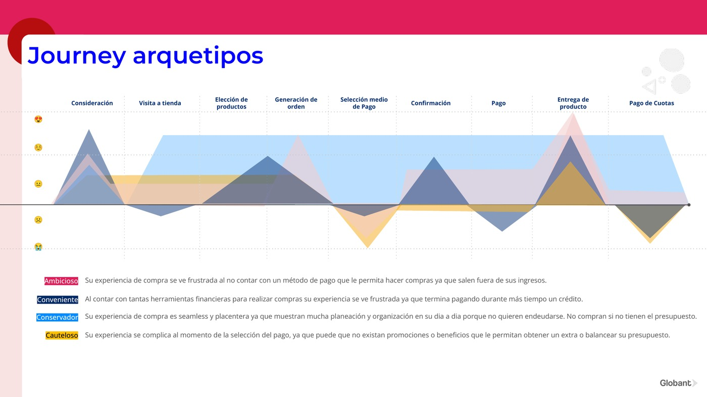

¿Cómo empezó?How did it start?
El reporte "As is" buscó entender el proceso de compra de las personas en Perú e identificar los puntos de dolor en todo el recorrido, profundizando especialmente en el momento del pago, para evaluar la oportunidad de un producto BNPL.
The "As is" report sought to understand people's purchase process in Peru and identify pain points across the journey, going especially deep into the payment moment, to evaluate the opportunity for a BNPL product.
FocoFocus
Hábitos de compra, motivaciones y sentimientos relacionados a los diferentes medios de pago, para encontrar áreas de oportunidad que evolucionen la experiencia.
Purchase habits, motivations and feelings around different payment methods, to find opportunity areas that evolve the experience.
02
Insights de usuariosUser insights
1
Temor a endeudarse
Fear of debt
La mayoría prefiere débito o efectivo: usar un financiamiento les genera un estrés extra que prefieren evitar.
Most prefer debit or cash: using financing creates extra stress they prefer to avoid.
2
Búsqueda en línea antes de comprar
Online search before buying
El primer paso es buscar el producto online; para muebles, línea blanca y ropa quieren tocarlo y probarlo, completando la compra en tienda.
The first step is searching online; for furniture, appliances and clothing they want to touch and try it, completing the purchase in-store.
3
Ofertas y fidelización deciden el medio de pago
Offers and loyalty drive the payment method
Eligen el medio de pago según promociones, descuentos, regalos y puntos que puedan usar durante y después de la compra.
They choose the payment method based on promotions, discounts, gifts and points usable during and after the purchase.
4
Miedo a olvidar la fecha de pago
Fear of forgetting the due date
Quienes tienen más de 2 productos financieros sienten estrés al recordar una nueva fecha — una barrera para colocar el producto.
Those with more than 2 financial products feel stress remembering a new date — a barrier to adopting the product.
5
Inclinación a pagar lo antes posible
Tendency to pay as soon as possible
Prefieren adelantar cuotas por miedo a penalidades por pago tardío y a la incertidumbre sobre su futuro financiero.
They prefer to prepay installments for fear of late-payment penalties and uncertainty about their financial future.
6
Contacto humano
Human contact
Buscan productos financieros con soporte humano-humano para poder comunicarse con su entidad.
They look for financial products with human-to-human support to communicate with their provider.
Journey del arquetipoArchetype journey
Mapeamos el recorrido emocional del usuario a lo largo del proceso de compra y pago, identificando los momentos de mayor fricción.
We mapped the user's emotional journey across the purchase and payment process, identifying the highest-friction moments.

Curva emocional del arquetipo desde la consideración hasta el pago del crédito.Archetype's emotional curve from consideration to credit payment.